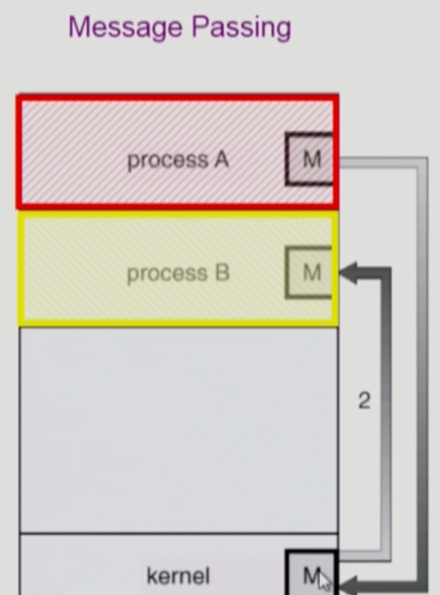

이화여자대학교 컴퓨터공학과 반효경 교수님의 "운영체제 (KOCW)" 강의를 필기한 내용입니다.
다소 잘못된 내용과 구어적 표현 이 포함되어 있을 수 있습니다.
Process Lifecycle
Process Creation
- 프로세스는 (Init process 가 아니라면)부모프로세스가 반드시 존재하고, 부모 프로세스를 복제하는 방식으로 자식 프로세스가 생성된다
- 뭐 init process 는 알다시피
sysvinit이나systemd등이 있겠제 - 따라서 프로세스는 init process 를 루트로 하는 트리형식의 계층 구조를 형성하게 된다
- 이렇게 자식을 복제하는 것은
fork()시스템 콜을 이용해 수행할 수 있다 - 프로세스 생성이 시스템 콜인 이유는 사용자 프로세스가 직접 하기에는 어려운 작업이고 아마 보안상의 문제도 껴있을거다
- 뭐 init process 는 알다시피
- 자식 프로세스도 당연히 프로세스니까 자원을 할당받을텐데 여기에는 몇가지 정책(모델) 이 존재한다
- 자원을 부모와 공유하여 운영체제로부터 받지 않는 모델
- 자원을 부모와 일부만 공유하고 나머지는 운영체제로부터 할당받는 모델
- 부모와 공유하지 않고 전부 운영체제로부터 할당받는 모델
- 생각해보면 자식 프로세스는 부모 프로세스와 독립적인 프로세스이기 때문에 자원을 공유하지 않고 운영체제로부터 할당받는게 맞는 거 같지만
- UNIX 같은 경우에는 효율성을 위해 일단 부모와 공유하는 방식을 사용한다
- 뭔소리냐면
fork()과정에서 부모꺼를 복제한다고 했자네- 근데 자원을 복제하면 결국에는 똑같은게 두개가 생길거 아님 → 뭐 프로세스의 Data, Code, Stack 같은게 똑같은게 두개가 생기게 될거아님
- 이게 좀 낭비같은거야
- 그래서 UNIX 에서는 일단 자원을 복사하지 않고 공유하고 있다가 부모랑 달라지면 그때 복사를 하는 방식을 이용한다
- 즉 Lazy copy 라고 말할 수 있는거임 → 이걸 Copy-On-Write (COW) 라고 표현한다
- 복제하는 과정을 좀 더 자세히 살펴보면
- 일단
fork()가 불려지면 운영체제는 PID 를 제외한 부모의 모든 것(뭐 PCB나 바이너리 같은것들 → 앞에서 배운 Process context 에서 PID 만 뺀거라고 생각해도 된다)을 복사한다 - 그리고 자식 프로세스에게 새로운 주속 공간을 할당한다
- 일단
- 하지만
fork()만 존재한다면 모든 프로세스가 부모랑 같은 작업만 할거 아니냐 → 그래서 (일반적으로는)fork()이후에exec()이라는 시스템 콜이 사용된다exec()은 기존에 존재하던 프로세스에 새로운 프로그램을 덮어 씌우는 시스템 콜인데- 일반적으로
fork()이후에exec()시스템 콜이 호출되는 식으로 프로그램이 프로세스로 변환된다 - 따라서 프로세스의 생성은 fork → exec 이 두가지 단계를 거친다고 할 수 있다
- 물론 저 두 단계는 독립적이어서
fork()만 해서 부모를 복사하기만 할 수도 있다
Process Execution
- 자식 프로세스가 생성되었을 때 부모가 취할 수 있는 동작은 두가지가 있는데
- 그냥 별개의 프로세스로써 자식이랑 같이 공존하며 실행되거나
- 자식 프로세스가 종료되어야 진행이 가능한 경우에는 block 을 먹어서 자식이 종료될때까지 기다릴 수도 있다 (
wait()시스템 콜)
Process Termination
- 프로세스가 자발적으로 종료될 때에는 일단
exit()시스템 콜을 이용한다- 프로그래밍 언어에서 지원하는 라이브러리(뭐 예를 들면 go 의
os같은 거) 를 통해exit()시스템 콜을 호출할 수도 있고 - 아니면 프로그램 코드가 종료되면 (뭐 마지막 중괄호가 닫히는 등의
main()함수가 리턴되는 시점)exit()시스템 콜이 작동되도록 컴파일러가 넣어주는 등의 방법 등 - 여러가지의 방법이 있지만 어쨋든 자발적으로 프로세스가 종료될때는
exit()시스템 콜이 무조건 호출된다 exit()이 호출된 다음에는 자식이 부모에게 output data 를 보내게 되고- 프로세스의 각종 자원들이 운영체제한테 반납된다
- 프로그래밍 언어에서 지원하는 라이브러리(뭐 예를 들면 go 의
- 그럼 자발적이지 않은 경우는 무엇이냐 → 부모 프로세스가 자식의 수행을 종료시키는 경우가 존재한다
- 뭐 자식이 너무 많은 자원을 먹어서 한계치를 넘어선 경우랄지
- 자식이 하고 있는 작업이 불필요해진 경우랄지
- 부모가 종료된 경우랄지
- 운영체제는 (init process 가 아닌 이상) 부모가 없는 프로세스가 존재하도록 하지 않는다
- 따라서 부모가 종료될때는 자식을 전부 종료시킨 후에 종료되도록 하는데
- 자식한테 또 자식이 있을 경우에는 또 그 자식이 종료되는 절차를 밟을 거 아님
- 그래서 부모가 종료될때는 자식을도 단계적으로 종료되게 된다
Process Syscall
Fork

- 이제 이건
fork()시스템 콜에 대한 C 언어 코드 예제인데 - 일단 흔히 나올 수 있는 질문 중 하나는 부모 코드에
fork()가 있는데 부모 코드를 그대로 복제하면 자식 코드에도fork()가 있을 것이고 그럼 자식도fork()를 해서 자식이 무한대로 생성되는거 아니냐 인데- 아니다
- 앞서
fork()를 할 때에는 Process context 전체를 복사한다고 했자네 - 따라서 PC 값도 복사가 되기 때문에 자식 프로세스는 프로그램의 맨 처음부터 실행하는 것이 아니라
fork()가 호출된 바로 다음 시점부터 실행된다
- 그럼 PC 값이 복사된다면 부모와 자식은 같은 Physical memory address 의 instruction 을 실행하게 될까
- 그것도 아니다
- 왜냐면 PC 에 들어가는 값은 Virtual memory address 이기 때문에 PC 값이 같긴 하지만 실제로 참조하는 Address space 는 다르고 따라서 다른 Physical memory address 를 참조하게 된다
- Physical memory address 에 대해서 CPU 는 알지 못한다 → CPU 가 사용하는 주소는 전부 Logical (뭐 Virtual address랑 거의 같다고 재철소장님이 그랬으니까) 이고 이걸 Physical address 로 바꾸는 건 CPU 가 아니라 Memory Management Module 이 BASE 랑 LIMIT 레지스터 값을 이용해 수행한다
- 참고
- 부모와 자식이 코드가 동일하다면 어떻게 다른 작업을 하도록 할 수 있을 까?
- C 언어에 구현되어 있는
fork()함수는 호출했을 때에 PID 값을 반환하도록 되어 있는데 - 생각해보면 호출된 이후에는 부모와 자식 이렇게 프로세스가 두개가 생기므로
fork()함수는 각 프로세스에게 두번 PID 값을 반환한다고 생각할 수 있다 - 근데 이때 부모 프로세스에게는 양수 정수값을 반환하는 방식으로 생성된 자식 프로세스의 PID 값을 반환해주고
- 자식 프로세스에게는 0을 반환해준다
- 이걸 이용해서 하나의 코드로 부모와 자식에게 다른 일을 시킬 수 있다
- C 언어에 구현되어 있는
Exec

exec()시스템 콜은 위에서 말한 것처럼 새로운 프로그램으로 현재 프로세스를 덮어씌우는 것을 수행한다- 그래서 C 언어에서는 이 시스템 콜을 위해
execlp()라는 함수를 제공해주는데 - 뭐 문법은 위에 사진 보던가 너가 찾아봐라
- 3번째 인자부터 해당 프로그램의 Args 들이 들어가는데
- 마지막 인자는 null string 을 넣어서 닫아줘야 한다네
- 중요한건
exec()시스템 콜을 호출하고 나면 새로운 프로그램이기 때문에main()함수의 맨 첫번째 줄부터 실행하게 된다- 어찌보면 당연한 얘기지 → 프로그램이 새로 프로세스가 됐는데 당연히 Process context 는 없는게 맞지
- 다음은
exec()을 실행하고 난 뒤에는 원래의 프로그램으로 되돌아오지는 못한다는 거다- 이것도 당연한 얘기다 → 기존의 프로세스가 새로운 프로그램으로 덮어씌워졌으니까 원래꺼는 없어지고 되돌아오지도 못하는게 인지상정
- 마지막으로는
fork()와exec()은 별개의 시스템 콜이기 때문에fork()없이도exec()을 호출하는게 가능하다는 거다- 따라서 이때에는 자식이 생기는 방식이 아니라 그냥 나 자신이 새로 태어나게 된다
Wait

wait()은 별거 없다- 그냥 부모가 자식 끝날때까지 block 되어 기다리게 하는 시스템 콜이
wait()이다- 그래서
wait()이 호출되면 커널은 해당 프로세스를 block 시켰다가 - 해당 프로세스의 자식 프로세스가 모두 종료되면 다시 ready 로 바꾼다
- 그래서
- 위 그림은 그냥 예제고 → 읽어보면 걍 별거 없다
wait()을 이용한다고 할 수 있는 프로그램이 Shell 프로그램이다- 결국에는 쉘의 경우에도 입력한 프로그램을 시키는 것이기 때문에 해당 프로그램을 자식 프로세스호 실행시키고 wait 하다가 끝나면 다시 커서를 깜빡이게 하는 방식으로 활용한다.
Inter Process Conmunication (IPC)
- Independent Process: 프로세스는 기본적으로 각자 독립적으로 작동하고 다른 프로세스에 영향을 끼지지 않는다 (뭐 부모 - 자식 관계는 예외)
- Cooperating Process: IPC 를 이용하면 다른 프로세스의 수행에 영향을 끼칠 수 있다
Message Passing

- IPC 의 분류중에 Message Passing 은 일단 커널을 브로커로 해서 메시지를 전달하는 방법 (Message System)이다
- 따라서 공유 메모리나 공유 변수 등을 사용하지 않는다
- 뭐 인터페이스가 두가지 종류가 있다네
- Direct Communication

- 얘는 수신 프로세스를 명확하게 명시하는 방식이랜다
- Indirect Communication

- 그리고 얘는 수신 프로세스를 명시하지 않고 메일박스(?) 나 포트번호 등을 이용해서 메시지를 간접적으로 전달하는 방식이라네
- Direct Communication
Shared Memory

- 얘는 말 그대로 공유 메모리를 커널로부터 할당받아서 두 프로세스가 메모리에 존재하는 데이터를 공유하는 방법이다
- 얘도 당연히 커널의 힘을 빌려야 하긴 하지만 Message Passing 의 경우에는 매번 커널에 의존하지만 얘는 공유 메모리를 처음 매핑할때만 커널에 의존한다는 차이점 정도가 존재한다
Thread
- 뭐 쓰레드는 프로세스가 아니기 때문에 IPC 라고 하기에는 좀 뭐하지만
- Thread 끼리는 메모리를 공유하기 때문에 통신이 아주 간편맨하댄다